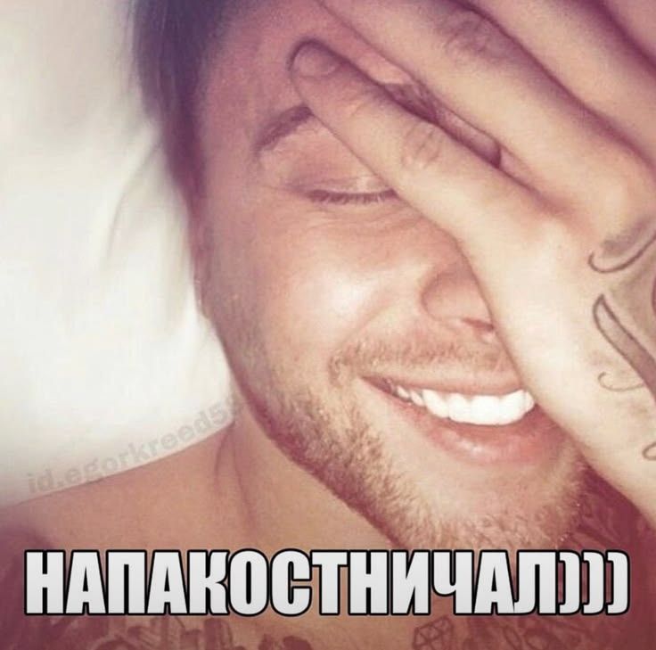

"Наверное такая самая серьезная вредная привычка - это доверять людям."
Егор Булаткин. Шоу "холостяк"
Биография
Созданием музыкальных композиций Егор занимается с 11 лет. Сначала находил чужие аранжировки, писал к ним свои тексты и через микрофон записывал.
После успеха некоторых треков Крид продолжил снимать и выкладывать клипы — и его заметили продюсеры Black Star. В 17 лет Егор переехал в Москву и подписал контракт с лейблом, музыка стала его основным занятием.
Осенью 2014 года певец выпустил свой первый хит «Самая-самая». Тимати, основатель лейбла, также рассказывал «Авторадио», что поначалу не верил в Крида и если бы «Самая-самая» не «стрельнула», то Black Star попрощался бы с певцом. В следующем году после ее выхода Крид получил «Премию МУЗ-ТВ» в номинации «Прорыв года»
В 2019 году у Крида закончился контракт с Black Star, и он не стал его продлевать. «Я перерос всю эту историю — быть артистом под продюсером <…>, я сам хочу быть продюсером самого себя», — говорил певец в интервью Юрию Дудю.
После ухода из Black Star певец стал сотрудничать с лейблом Warner Music Russia. У Крида вышло два альбома — «58» в 2020 году и Pussy Boy в 2021 году.
Вот еще несколько цитат великого певца:
"настроение жесткое..п**ец...аж хочеться покурить..тупо смотрю в этот долбанный экран...(( грустно...помогите...."
Егор Булаткин. Пост ВК
"в п*ду все...та кто сейчас нужна...вне сети....ф*кин щит...одним словом...(я запутался п**ец)."
Егор Булаткин. Пост ВК
